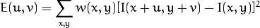
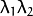

Harris corner detector¶
Goal¶
In this tutorial you will learn:
- What features are and why they are important
- Use the function cornerHarris to detect corners using the Harris-Stephens method.
Theory¶
What is a feature?¶
- In computer vision, usually we need to find matching points between different frames of an environment. Why? If we know how two images relate to each other, we can use both images to extract information of them.
- When we say matching points we are referring, in a general sense, to characteristics in the scene that we can recognize easily. We call these characteristics features.
- So, what characteristics should a feature have?
- It must be uniquely recognizable
Types of Image Features¶
To mention a few:
- Edges
- Corners (also known as interest points)
- Blobs (also known as regions of interest )
In this tutorial we will study the corner features, specifically.
Why is a corner so special?¶
- Because, since it is the intersection of two edges, it represents a point in which the directions of these two edges change. Hence, the gradient of the image (in both directions) have a high variation, which can be used to detect it.
How does it work?¶
Let’s look for corners. Since corners represents a variation in the gradient in the image, we will look for this “variation”.
Consider a grayscale image
 . We are going to sweep a window (with displacements in the x direction and in the right direction) and will calculate the variation of intensity.
. We are going to sweep a window (with displacements in the x direction and in the right direction) and will calculate the variation of intensity.
where:
- is the window at position

- is the intensity at
- is the intensity at the moved window
- is the window at position
Since we are looking for windows with corners, we are looking for windows with a large variation in intensity. Hence, we have to maximize the equation above, specifically the term:
Using Taylor expansion:
Expanding the equation and cancelling properly:
Which can be expressed in a matrix form as:
Let’s denote:
So, our equation now is:
A score is calculated for each window, to determine if it can possibly contain a corner:
where:
- det(M) = 
- trace(M) =
a window with a score
 greater than a certain value is considered a “corner”
greater than a certain value is considered a “corner”
Code¶
This tutorial code’s is shown lines below. You can also download it from here
#include "opencv2/highgui/highgui.hpp"
#include "opencv2/imgproc/imgproc.hpp"
#include <iostream>
#include <stdio.h>
#include <stdlib.h>
using namespace cv;
using namespace std;
/// Global variables
Mat src, src_gray;
int thresh = 200;
int max_thresh = 255;
char* source_window = "Source image";
char* corners_window = "Corners detected";
/// Function header
void cornerHarris_demo( int, void* );
/** @function main */
int main( int argc, char** argv )
{
/// Load source image and convert it to gray
src = imread( argv[1], 1 );
cvtColor( src, src_gray, CV_BGR2GRAY );
/// Create a window and a trackbar
namedWindow( source_window, CV_WINDOW_AUTOSIZE );
createTrackbar( "Threshold: ", source_window, &thresh, max_thresh, cornerHarris_demo );
imshow( source_window, src );
cornerHarris_demo( 0, 0 );
waitKey(0);
return(0);
}
/** @function cornerHarris_demo */
void cornerHarris_demo( int, void* )
{
Mat dst, dst_norm, dst_norm_scaled;
dst = Mat::zeros( src.size(), CV_32FC1 );
/// Detector parameters
int blockSize = 2;
int apertureSize = 3;
double k = 0.04;
/// Detecting corners
cornerHarris( src_gray, dst, blockSize, apertureSize, k, BORDER_DEFAULT );
/// Normalizing
normalize( dst, dst_norm, 0, 255, NORM_MINMAX, CV_32FC1, Mat() );
convertScaleAbs( dst_norm, dst_norm_scaled );
/// Drawing a circle around corners
for( int j = 0; j < dst_norm.rows ; j++ )
{ for( int i = 0; i < dst_norm.cols; i++ )
{
if( (int) dst_norm.at<float>(j,i) > thresh )
{
circle( dst_norm_scaled, Point( i, j ), 5, Scalar(0), 2, 8, 0 );
}
}
}
/// Showing the result
namedWindow( corners_window, CV_WINDOW_AUTOSIZE );
imshow( corners_window, dst_norm_scaled );
}
Explanation¶

Help and Feedback
You did not find what you were looking for?- Ask a question on the Q&A forum.
- If you think something is missing or wrong in the documentation, please file a bug report.